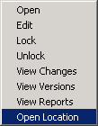

In this Article I'm going to show you how to use the Repository in Workflow.
The Repository is a great place to store your workflows, keep a backup and see the changes throughout the process.
When you install Workflow you have an option to configure the SMP. This can be done at a later stage too.
Open Symantec Workflow Explorer
"[Install Drive]:\Program Files\Symantec\Workflow\Tools\Symantec.Explorer.exe" or
"[Install Drive]:\Program Files\Symantec\Workflow\Tools\Symantec.Explorer.exe" -page CredentialManager
Set up SMP in the Explorer app, click on the Symantec Management Platform on the left hand side
Click Add
Fill in your details

You can then highlight and click Test
This will now be available in Workflow Manager.
Open Workflow
"[Install Drive]:\Program Files\Symantec\Workflow\Designer\bin\WorkflowManager.exe"
Expand the Repo(s)
There should be a Projects folder but it'll likely be empty.
Click back onto the Local folder
New - Forms (Web)
Give it a name "POC_Repo_WEB"

Complete your Workflow...
Click the Check In button in the toolbar or File | Check In Project (Ctrl+Shift+S)
You will received a message
Then choose a location
You have the option to create a new Folder and you can Delete the local copy. This can help with not getting your projects out of sync.
I usually keep this unchecked then move the original into an archive folder locally.
The Project is then closed and the new newly created project is opened.
If you right click on the local Project and select Open Location

You will be taken to
"[Install Drive]:**\Program Files\Symantec\Workflow\WorkflowProjects**POC_Repo_WEB"
If you do the same with Repo version

You will see a different folder location
"C:\Users\alex.hedley\AppData\Local\Symantec\Workflow\Repository\e8951e09da7f46158b58176da73fa647"
In Workflow Manager you will see two columns, Local Version and Latest Version
These inform you what version you have copied to your machine and which is the latest in the Repo.
It's always best practice to click on the Refresh before you check out a version.
I tend to double click on a Project to open it but you can click Check Out then Open if you want to make sure**.**
If you are working on a copy and don't wish to use it anymore and want to revert to the last know good copy, open the location, then delete or move this folder elsewhere. Click on Refresh and the Local Version column will not contain a number any more, now when you Check Out and Open you will be back to the latest version you can begin to work on again.
Updating a Workflow.
Make your changes then click on Check In again.

Refresh the Manager and your version number will have increased
Now if you Right Click on a Project and click View Versions

You will see a nice list of all the notes you've made against versions you've Checked In.

There may come a time when you make changes, check them in then realise they weren't necessary, instead of deleting the components you can roll back to a previous known version.
Close the Project first.
Highlight the version row and click Rollback.

Uploading DLLs.
You may have created a DLL, Integration Component, that you wish to store in the Repo.
Open the Location and check there is a .SymWorkflow file
Now back in WF Manager go to the folder, where the project is, you wish to upload, click on Import
Find the file, click Open

Then wait for it to upload.
You will then see it available in the main screen, if not click Refresh.
Make sure if you create a new Repo Project that you check this, it isn't by default so it will show as version 0 then others can't open it
Backup
Each time you Check In a project a version is created in a Backup Folder
"[Install Drive]:\Program Files\Symantec\Workflow\WorkflowProjects\Backup"
Task Tray Tool
"[Install Drive]:\Program Files\Symantec\Workflow\Tools\LogicBase.Local.TaskTray.exe"
Right Click - Shortcuts - Edit Tool Preferences

Under Studio Configuration
Backup

Links
About the Workflow Repository
http://www.symantec.com/docs/HOWTO62234